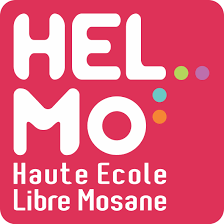

Mon nom est John Doe.Je suis étudiant en première bac du "Bachelier Informatique orientation Développement d'applications".
Un de mes objectifs ? rendre mon projet web dans les temps.
C'est un défi de taille, mais je suis déterminé à le relever. Pour cela, je vais définir clairement mes objectifs, établir une liste des tâches à accomplir et estimer le temps nécessaire pour chacune d'elles. En créant un planning réaliste qui prend en compte mes autres activités, je pourrai mieux m'organiser. Je vais également identifier les moments de la journée où je suis le plus productif et concentrer mes efforts sur les tâches prioritaires,tout en n'hésitant pas à demander de l'aide si nécessaire.
Avec de la méthode et de la discipline, je réussirai à mener mon projet à bien dans les délais impartis !
Le projet se base sur un cahier des charges fourni. Celui-ci sert de référence et de guide pour un projet de création ou de refonte de site internet. Il définit le contexte, les objectifs, les éléments fonctionnels attendus...
Le cahier des charges est à télécharger via l'espace HELMo Learn
